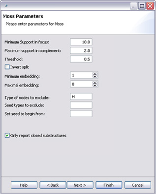

MoSS is a useful program when it comes to searching for frequent molecular substructures and discriminative fragments in a set of molecules.
A small guide about the different pages of MoSS.
Get started
First Page
Second Page
Third Page
Fourth Page
After you opened Bioclipse create a new folder File --> New and a window will open then open General and choose
Folder. There are other ways to create a folder for example press right button on your mouse choose New --> Folder.
Then you create needed files in that folder by right pressing and choose New--> File.
Name your file and end it with .txt or .smiles it has to be a text file for MoSS to work.
Then you add your input data. Now you are ready to run MoSS this is done
by right pressing and choosing MoSS. If any errors exist in your input file you will be warned. When pressing ok
on that dialog MoSS wizard will open and add all correct molecules until the error occurred and so you
will know on which row to look at in your input file.
You are able to press finish at any time as long as all settings are correct. You are also able to move back and forward in the wizard and already made settings will be saved but unfortunately when ever the wizard closes these settings will be lost. Hopefully an option on whether or not you would like to save setting will be implemented in the future!
Output files will by default be named "MossOutput.txt" and "MossOutputid.txt" and will be displayed in the folder
you ran your search in. You are able to change the name of the files by writing something else directly in the window,
or maybe you have existing files that you would like to overwrite then either write or browse their directories.
If you browse a file in an other folder existing in Bioclipse they will be written there.
Notice!
If you choose a file outside your workspace they will not show in Bioclipse.

At the moment the program only support the notation language SMILES and a certain layout
in the input file see How to read an input and output file.
Directly when you open MoSS you are able to see your input in the format id,values and description.
It also gives you the opportunity to unselect molecules and of course reselect them.
If molecules are not completely shown the table can be resized.
If you would like to specify your output to a certain file you are able to browse a directory.
But if you do so your output will not show in Bioclipse. By default your output file MossOutout.txt will
be displayed in Bioclipse. Same goes for identifier output file.
On this page you are able to start setting your preferences.
Minimum Support gives you the opportunity to specify what minimal support a
substructure need to obtain to be reported. Minimum support is set for the focus part therefore
the value of the input file need to have a value see Input file
less then its threshold.
Maximal Support if a complement part exist it can be
restricted by be given a maximum support. Only substructures that fulfill
this support will be reported.
Threshold and Invert Split In the input file
a value is to be set and hold the information whether or not your data should
be divided into two parts a focus and a complement part.
To be able to divide your data a threshold need to be set. Molecules that contains a
values less then your threshold is placed into focus part and molecules with a value
greater than your threshold will be placed into the complement part.
By checking the invert Split box the data is inverted.
Minimum and Maximal Embedding
By giving a minimal or maximal number of
substructures you are able to restrict the size of substructures.
Important if maximal size is set to 0 there is no restriction.
Type of nodes, seed types to exclude and seed to begin from if there are atoms you do not like to
include in your mining add them in "Type of nodes to exclude" box. Same goes by seed
excluding if there are atoms you do not want the mining to begin with type them in the
"Seed types to exclude box". On the other hand if there is a certain atom
you want the search to begin from you type it in "Set seed to begin from".
Good to know:
- use SMILES as notation language,
- do not add any blank steps, commas or any other token.
Example 1.
If you would like to exclude carbon, hydrogen and oxygen you write CHO.
For more help about SMILES see Daylights SMILES tutorial
By default hydrogen(H) is always excluded.
Empty boxes means that a wildcard is set.
Matching of bonds and atom types
How to treat aromatic bonds
As you might see this combobox is set to "aromatize bonds" which means that aromatic bonds are treated
as an extra type.
If you click on the box you will get two more alternatives "upgrade bonds" and "downgrade bonds". This means
that the aromatic bonds will be treated as equivalent to double bonds respectively single bonds.
Ignore type of bond and Ignore type of atoms (chemical element)
By default bond/atom types are never ignored if you select "always" bond/atom types will always be ignored and "in rings"
means that bond/atom types will only be ignored in rings.
Match charge of atoms and Match aromaticity of atoms
You might also want to match or ignore other features of atoms like their charge and aromaticity.
If the charge is matched then atoms with same element type but different charge are seen as different atoms.
But in order to be able to ignore the atom type or the bond type in rings, ring bonds must be distinguished
from other bonds therefore next checkbox with up coming comboboxes need to be set ("If to distinguish between bonds in rings ")
Rings and Chains
If to distinguish between bonds in rings TBC
Convert from Kekulé representation to aromatic rings
Aromatic rings can be represented in two different ways either by Kekulé representation INSERT A PICTURE
where every other bond is represented as a single bond or a double bond or by actual aromatic bonds. It is
recommended to convert rings to aromatic rings since it is a hindrance when it comes to matching.
Variable length in carbon chains Finding variable length carbon chains can be useful if one is interested in considering substructures as equivalent that only differ in the length of carbon chains between their parts.
Pruning
Pruning only works in the searching performance and will not affect your result. By using pruning you
are able to minimize memory space. Since the process time increases using pruning you should be sure
on what you are doing specially if you have a large set of data. I recommend a visit to
Christian Borgelts hompage
if you like to know more about pruning.
Anyhow there are three different pruning types to work with:
Perfect extension pruning, Canonical form pruning and Equivalent sibling pruning
Memory
Maximal embedding
Default value is 0 which indicates that there are not a limit for maximal embedding.
This setting help you save memory by restriction of the maximal number of embeddings kept per graph or molecule.
Unembed sibling nodes
Also a function that helps you save memory by removing embeddings of siblings of the current search tree node.
This is possible since the mining mainly consists of depth-first searches.
Notice!
Processing time could increase when using these functions!